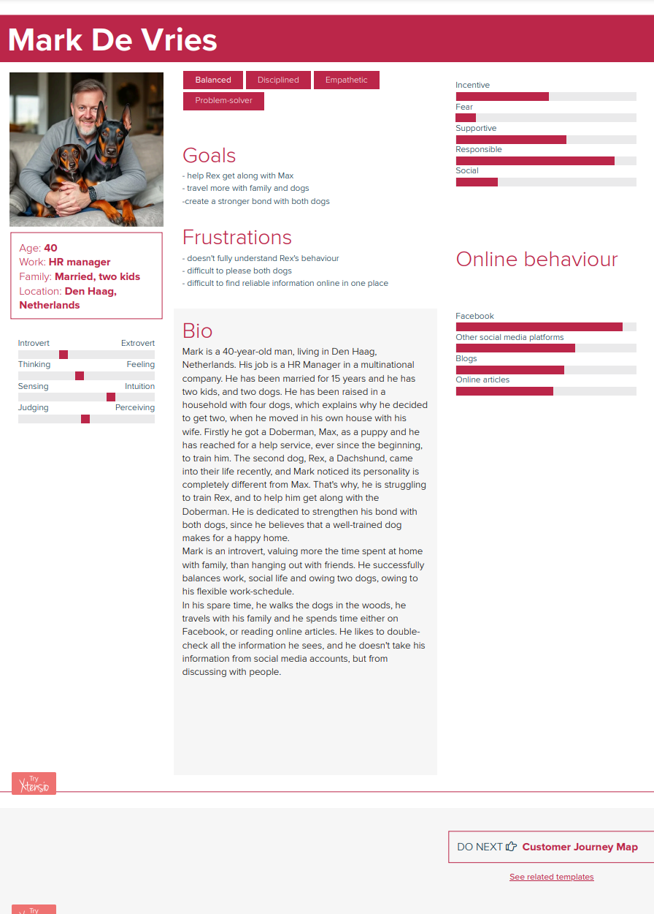
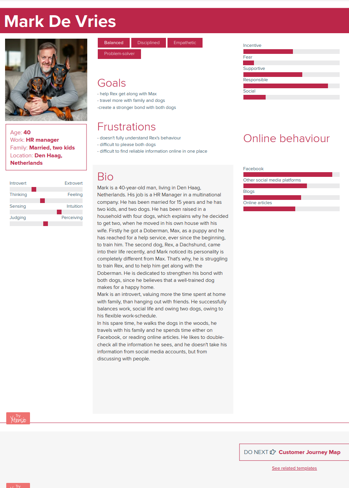

General Information
This branded website is publicly available at https://theodoraionescu.github.io/Dog-Owners/training.html
This website was created by:
- Theodora Ionescu (ID: 230974)
- Edia Vaculíková (ID: 247290)
- Floor Dillen (ID: 232904)
- Veronika Bozukova (ID: 231881)
- Mihnea Velea (ID: 231472)
Content
Please clarify here the match between students and pieces of content. Make sure that you provide a link to the correct page within the website
| # | Student ID | Value | Name and link of content |
|---|---|---|---|
| 1. | 230974 | Value: Parenting with a Woof | Management |
| 2. | 247290 | Value: Bark effortlessly | Marketing |
| 3. | 232904 | Value: Pawsitively responsible | Production |
| 4. | 231881 | Value: Bark in harmony | Content |
| 5. | 231472 | Value: Sharing a bone | Website |
Brand Vision
Just like peanut butter and jelly, humans and dogs may be very different, but we are always better together. At BarkBond, we dream of a world where humans finally crack the code of the secret dog talk – because let’s face it, dogs have been trying to tell us things for forever! By turning all tail wags and woofs into real conversations, we create a world where every bark is heard, every paw is received with open arms, and the bond between humans and dogs is stronger than a game of tug-of-war.
Brand Name
Why BarkBond? Because that’s what we’re all about — the bark (your dog’s voice) and the bond (your connection).
We wanted a name that’s simple, playful, and says exactly what we stand for to not create any confusion: helping humans and their dogs understand each other better, one wag and woof at a time.
It’s about turning "sit" into something fun, "stay" into trust, and every tail wag into a shared win.
Brand Logo
Say hello to our little mascot! Our dog logo is made from clean, simple lines, designed to be instantly recognizable (even on a tiny profile pic). Just a few strokes — and boom, you’ve got a friendly pup giving you the “ready to learn!” face.
We didn’t overcomplicate it because, well... neither should training be. It’s approachable, playful, and totally BarkBond — the kind of logo that wags its tail at you.
We love using the dog icon solo when we want to keep it minimal (like on socials), and the full BARK BOND text when we wanna speak loud and clear. Both elements work on their own or together — like a good human-dog duo.
And yes, we played with all the fun colour combos from our palette to keep it looking fresh, warm, and trustworthy — just like us.
Product Description
Welcome to Barkbond, where training your dog feels less like a chore and more like a fun adventure! We’re all about helping you build an unbreakable bond with your four-legged bestie through easy, effective training and a better understanding of dog behavior. Whether you're dealing with zoomies, stubborn leash pulling, or a pup who thinks your couch is their personal throne—we got you! Here, you'll find expert-backed training tips, step-by-step guides, and cool insights into what’s actually going on inside your dog’s head (spoiler: it’s not just food). From mastering the basics to teaching next-level tricks, we make training simple, stress-free, and even fun!
Brand Target Persona
 

Production
Design Elements
Please provide a list of design elements alongside their justifications:
-
We wanted a color palette which was bright and cheery, with a few contrasting colors where needed. Most of all, the color palette had to illustrate a light-hearted tone and have a cheerful effect on visitors. as well as eminate trust and harmony. As such, we decided to go with pastel colors in general, with two darker colors to create a pleasant contrast and avoid overloading the user with bright colors. This lead us to these choices:
- #FBEDC0 The warm and cheerful color is welcoming, as well as it standing for optimism and pawsitivity!
- #D2E8FF Light blue signifies calm in the chaos, offering structure without being too strict or harsh.
- #EA672D The orange gives a sensation of energy and motivation, adding a dose of paw-sonality to our brand - playful, bold and ready to train!
- #26422A A forest walk visualized in a single color - full of harmony, good vibes and reflecting growth in both relationships and training.
- #5D372A A loyal companion to the palette, displaying sensations of reliability and loyalty, the nurturing tone of the brand.
- Font choices - Lazy dog is the main font, chosen for its casual style and friendly appearance, while Candal has been chosen for most titles and headings as it has a more easily readible appearance, as well as a clear and comanding look to contrast with Lazy Dog.
- For the clarity of the website's intended target audience, the home page features the brand name and an image of a dog as soon as it opens up. Overall, the page was kept as minimalistic as possible in order to make it easier for our target audience to utilize, as many of them are less tech-savvy than our generation. The menu's are kept simple and clear, with most buttons for navigation located at the top of the page in common with other web pages to give BarkBond's website a familiar look and feel. The filter sistem for dog breeds and age is a drop-down menu to allow our visitors to have an overview of all currently available information at the time of visiting, instead of having to search around for a page which might not exist.
- Please relate these elements to other units, for example:
- The minimalistic look also fits in with the brand's minimalistic style, with the logo designed out of simple line-art which gives a light-hearted and relaxed tone to the brand.
- The light and lively feel of the website also fits with our communication strategy on social media, which has been filled with trendy memes and joke-like posts, filled with puns and light humo in order to fit-in with our overall theme and vision.
- The chat section is the most unique feature of the website when compared to competitors, and the chat feature is part of the main selection of menu's, attracting more attention to the feature.
Credits
- All images used were sourced from https://www.pexels.com/
Testing Report
- During our testing, we focused on the website's ease of use and user-friendliness, to determine if our target audience would be able to easily identify and utilise the website's features. Another factor we focused on during testing was how clearly the website communicates the mission and vision statements, and the overall feel given to website visitors by the aesthetic and communication styles.
- Testing details:
- As of writing this, we have 3 testers, of which 1 is directly within our target audience and 2 are dog lovers, however are younger than our target audience.
- Two of the tests were done in person while the third one was done remotely online. Recording was either done by phone or digitally, but the participants were tested in familiar areas, either at BUas or at their home remotely online in order to maximize the natural feel of visiting the website.
- The participants were asked to look around the website, occasionally locate specific features and provide feedback or potential points of improvement.
- Your testing results, which includes information about:
- One negative aspect identified by two candidates was the fact that the UI menu buttons at the top of the home page do not stand out enough to make it clear that they are a feature immediately, but it was added by participants that it is not a significant hinderence, just the only point of improvement they could identify.
Marketing
Context of campaign and promotional activities
Our marketing campaign is represented by posting consistently for one month on both Instagram and Facebook, the platforms that are most used by our target audience. It is going to last one month, until April 11th, considering that we have to analyze our progress in the end. During the campaign, we aim to build an online community amongst dog owners, in order to influence them to visit our website, BarkBond. The most strategic choice to bring website traffic is to connect beforehand with people, through engaging posts, building this way a base, and gaining potential customers. Furthermore, through this approach, we create buzz, which means building excitement through consumers’ interactions. For promotional activities, since we won’t allocate any budget for promotion, we will stick with content marketing, namely user-generated content and trends. We will create personalized content, using polls and personalized content, with the intention of engaging with people and catching their attention. Speaking about trends, we try to use as many valuable hashtags as possible, while posting relatable content, to get more viewers.
Reach Objective: By January 31st , we want to have reached 10.000 people on Instagram and 500 on Facebook, by keeping posting informational content as well as shorts and carousel posts. We will measure this objective through Instagram and Facebook metrics, that provide a clear and concise professional dashboard.
Learning Points
What worked well:
- Posting in the afternoon, at different times than the research states, for a better reach
- Using various hashtags related to our topic to increase visibility, target specific audiences, build brand awareness and improve searchability
- Posting engaging stories people can interact with, to build a community, track engagement and encourage participation
- Posting informative posts to increase curiosity and engagement, encourage sharing and connect to larger conversations
- Posting entertaining reels to boost shareability, attract users, join trends, create interaction and connect with humor enthusiasts
What didn't work well:
- 4 posts on Facebook are missing and 6 are posted late, not according to the content calendar. We tried as much as possible to stick to the content calendar, but our schedules were so busy that we couldn't align with each other. It was definitely our mistake, but we tried at least in the last week to post everything on time.
- Posting in the morning because millennials don’t spend much time on socials during that time
- Posting inconsistently on Facebook, since it leads to less visibility
- Not prioritizing stories, because they weren’t our main focus even though they worked well before and they would potentially bring us more viewers
- Not prioritizing Facebook platform, because if we came up with a different strategy such as promoting it in different dog-groups, we would have gained for sure a few more followers
Future Planning
For the upcoming weeks, we aim to dive even deeper into our insights, see what worked better and post similar content in order to achieve our goals. To do that, we want to plan meetings where we can analyze the reach and the engagement of each post, and eventually do more research about our audience, millennials and their online behavior. Since Facebook was the platform with the least interactions, we aim to focus more on it, first by promoting it on our Instagram page, and later, on Facebook groups. To avoid our content getting banned, we want to apply a strategic promotion campaign, without straight forward CTA, such as “Follow our page for more information”. As far as we are concerned, obvious promotional content on social media platforms is constantly getting either deleted or shadow-banned, and we aim to think outside the box to attract followers. If we were to consider a budget, we would potentially dive into Facebook ads, and turn our most viral content into an ad, that would be displayed specifically to our target audience, in the exact same niche we are going to. Additionally, we aim to partner with different brands that sell products exclusively for dogs. This way, we would gain brand awareness, credibility and reach.
Our overall strategy would slightly change, we would still stick to the look and feel we set, since it perfectly matches with our brand, but we would focus more on the training tips. For other promotional strategies, we plan to create exclusive content for active followers, content that can be seen if they subscribe to our Instagram page. Speaking about benefits, they would have one-to-one sessions with trainers, where they can discuss even further their concerns regarding training. Not only do they get special sessions, but they also benefit from diverse discounts from the brands we are going to partner with. Furthermore, we would like to create a community among our subscribers, where they can chat and bond with each other. Until now, we noticed that there are some “peak” periods of time, when our content is boosted. We have noticed that it depends on week to week so we cannot dive into it right from the first week of posting. This will be researched even further in the future.
Additionally, we want to set new specific goals until January 31st 2025, since our campaign will be running for a few more months.
Professionalism
Present and organize below all social media/online activities of the campaign. Context and material are according to the brand style, image, and vision. Images on the site are of high-quality, readable, and properly designed.
Link to Marketing plan documentation


Management
Lean Canvas
Fill in at least 2 bullet points per building block and according to the rubrics.
Problem
- Dog owners do not understand their dog's behavior- It is a given that humans and dogs cannot communicate with words and despite the humans still trying to talk to their dogs the only way that the animals can respond it through their actions. So, by knowing what each behavioral indication means people can understand and help their furry friends in the most optimal way.
- Finding time and effort to train your dog by yourself is difficult- From the problem interviews we did we found out that a big obstacle that dog owners have is time management. Between work and having to take care of themselves and their home they hardly find the time to train their dog.
- There is too much contradictory information online- If someone decides to train their dog on their own, they may go online but since it is such a common topic there are a lot of articles and apps that plainly contradict themselves. Moreover, from the problem interviews a theme that was mentioned often is that people often go to multiple different sources to get information about their dog.
Solution
- Providing information about dog's behavior sorted by age and breed- Our solution to the problem of people getting confused by the misleading information about dogs is to have a filter that helps them pinpoint the information specifically to their dog’s breed and age.
- Giving people a schedule and tips on how to train their dogs- Our website would work on a day-by-day training schedule people can fill in how long their training sessions per day can be. That helps with the planning of the time management problem.
- Receiving professional tips by trainers- Following the idea of people personalizing the websites to the needs of their dog we also provide tips and tricks from trainers who have worked with multitude of different dog breeds and ages.
Customer segments
- Millennials (26-41)- From research we found out that the people who are most likely to own or get a dog are millennials. There is a reason for multitudes for that either they are lonely and want a furry companion or they want to surprise their children and get a dog for them. Whatever the reason may be they are the largest age segmentation that own dogs that is why they are our primary target audiences.
- Have a stable income- Since owning a dog can be quite costly with all the dog food, training and vet bills, we would expect our users to have a stable income. And despite the fact that our website will be significantly cheaper we are still planning to collaborate with trainers who will need to be paid for.
- People who already own a dog- Our website is primarily to help dog owners train and understand their dogs better thus we are targeting mainly people who already have a dog. Of course, people who are planning to get a dog or are curious about our website could freely use it but our marketing is towards people who have a dog.
- People who seek a harmonious environment- Coming from our values we want our users to have the same virtues as us. We want dogs to be heard and understood so that both animals and humans can live stress free together. Our users must want to build a strong bond with their pet and actually put in the effort for that.
Unique value proposition
- A website that helps a dog owner to understand their dog better by providing them with information and easy training exercises- What this basically means is that by taking all of the problems we gathered from our interviews we took the ones which were the most consistent. And we decided to tackle them with our website so that all users have the needed information in one place.
Unfair advantage
- All information all in one place- Unlike other websites that give people only information about their dogs and no tips for training our website does both of those things. Moreover, if need be our website can connect our customers to professional trainers that can give even more personalized tips and suggestions.
- Easily accessible- Other websites are not like other platforms where you need to pay to read the content. It is open to the outside public and people can see the tips and tricks and personalize it for their dogs without paying. The only paid product on our website is the premium version of it where they get more content and no advertisements.
- Pre-built Breed-Specific Programs- Another huge advantage of our website is the ability it gives users to make it as specific as possible for their dogs they can put in what breed and age the dogs are as well as what command they want to teach their pet.
Channels
- Word of mouth marketing- Since most dog owners have friends and family that are very likely to be dog owners as well. We are hoping our users will suggest our app to them if they struggle with training their dog.
- Instagram- The second most used app by millennials is Instagram so naturally we will be posting there as well. Unlike Facebook on Instagram our main focus is to bring attention to our website by posting fun content that will engage a lot of people.
- Facebook- From research we gathered that millennials, which is our target audience use Facebook the most frequently. It is the best platform to build a tight knit community where we can build a close bond with our customers.
Key metrics
- Website traffic- By seeing how many people visit the website we can acknowledge how our marketing campaigns are going as well as how we can fix our UX designs. Moreover, the more traffic we get the more we are likely to get partnerships and collaborations.
- Subscribers- Our subscribers will have access to more content. This shows how engaged and committed people are to our website and product. For us that will also mean that we have managed to build a stable community.
- Daily users- The daily uses will help us keep track of what is the most popular feature of our website, the thing that people come to see most often, as well as help us understand how we can keep people occupied.
Revenue streams
- Ads on website- Our site will be the perfect place for advertisers in the pet industry to advertise their brand, think about dog food brands, pet insurance, and grooming services. We will provide a space for them to place their ad on our website. The revenue we will earn from this depends on different factors: the volume of traffic, user engagement, niche specificity, and the types of ads displayed (Isaac, 2024). You can calculate how much revenue you earn for ads with how many times the user click on the ad. The average revenue per click differs between €0.10 and €1 (Making Money With Pay Per Click - Websavers, n.d.). So, it will completely depend on the user engagement how much we will earn with this.
- Subscriptions- To increase our revenue stream we will ask our users a subscription fee. The interviews have shown us that the majority of the target audience prefers a monthly subscription. So, they can cancel their subscription every month if they want to. They also mentioned that this will work best for them because they only need access to our website when a problem with their dog occurs. They mentioned that a fair price for this subscription will be between €5 and €10. This revenue stream will depend on how many users decide to take out a subscription.
Cost structure
- Collaboration- With Barkbond, we intend to collaborate with dog trainers. Since our website will provide training tips, videos, and explanations, we find it important that we provide our users with reliable information. None of the website owners are dog experts, so that is why we choose to collaborate with those who are. Those trainers need to get paid, obviously. Research has shown that the average salary of dog trainers in the Netherlands is €37.642 per year (salaryexpert, 2025). However, we are not planning to employ them, but to use them more like an information point. We will need them in the development period of our website plus maybe some touch ups that we will do over the years, since research about dogs is an ongoing process. The average hourly salary of dog trainers is €18 (salaryexpert, 2025). But since we are a new brand, we do not have that much to spend yet. So, we will decrease their hourly salary to €12. In exchange for this decrease we will offer them visibility on our website. We are planning to offer the dog trainers a zero-hour contract. Where they can keep track of the hours they spend working with us. And receive their salary accordingly.
- Server upkeep- a website needs to stay updated, so we are planning to hire someone who will do that for us. They need to make sure that the website is always up to date to the newest software, so it can run better and faster, they need to fix problems if something goes wrong, to clean up files which ensures enough space, and they need to protect it from viruses and hackers. To save some costs, we decided to work with a free-lancer. Research shows that their hourly salary is around €17 (Payscale, n.d.). But again, since we will decrease their salary, because we are an upcoming brand, we will end up around €14 per hour. We will also offer them a zero-hour contract. So, they can write the hours they work for us down and then they will receive their salary accordingly.
- Sales and marketing- Our website also has a marketing campaign around it. However, we are planning to do the marketing on our own, since our team is experienced in it, and also to save some money. However, we want to advertise our website mainly on Instagram. Instagram asks for advertising costs. Per click, per 1,000 views, and per engagement (like, comment, share). Per click they ask between €0.23 and €1.85. Per 1,000 views, they ask about €3.70 to €9.25. And per engagement around €0.03 to €0.10. This all sums up to an average cost of €2,530 per month (What’s The Cost Of Instagram Ads?, n.d.).
Services/products
- By offering tips from industry specialists on dog training, we support our UVP by supplying simplified tips and tricks on dog training to our website visitors and customers
- Minimalistic branding supports our goal of providing simple advice to regular, every-day people which lack the time to spend hours doing research online
Validation of Assumptions
Write a reflection on the choices made in creating choosing the trademark, including an analysis of the existing alternatives.